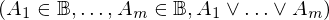
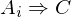

Expression of type Conditional¶
from the theory of proveit.logic.booleans.disjunction¶
In [1]:
import proveit
# Automation is not needed when building an expression:
proveit.defaults.automation = False # This will speed things up.
proveit.defaults.inline_pngs = False # Makes files smaller.
%load_expr # Load the stored expression as 'stored_expr'
# import Expression classes needed to build the expression
from proveit import A, C, Conditional, ExprRange, IndexedVar, Variable, i, m
from proveit.core_expr_types import A_1_to_m
from proveit.logic import And, Boolean, Forall, Implies, InSet, Or
from proveit.numbers import one
In [2]:
# build up the expression from sub-expressions
sub_expr1 = Variable("_a", latex_format = r"{_{-}a}")
expr = Conditional(Forall([C], C, condition = ExprRange(i, Implies(IndexedVar(A, i), C), one, m)), And(ExprRange(sub_expr1, InSet(IndexedVar(A, sub_expr1), Boolean), one, m), Or(A_1_to_m)))
Out[2]:
expr: 
In [3]:
# check that the built expression is the same as the stored expression
assert expr == stored_expr
assert expr._style_id == stored_expr._style_id
print("Passed sanity check: expr matches stored_expr")
In [4]:
# Show the LaTeX representation of the expression for convenience if you need it.
print(expr.latex())
In [5]:
# display the expression information
expr.expr_info()
Out[5]:
| core type | sub-expressions | expression | |
|---|---|---|---|
| 0 | Conditional | value: 1 condition: 2 | |
| 1 | Operation | operator: 3 operand: 4 |  |
| 2 | Operation | operator: 13 operands: 5 |  |
| 3 | Literal |  | |
| 4 | Lambda | parameter: 31 body: 6 |  |
| 5 | ExprTuple | 7, 8 |  |
| 6 | Conditional | value: 31 condition: 9 | |
| 7 | ExprRange | lambda_map: 10 start_index: 22 end_index: 23 |  |
| 8 | Operation | operator: 11 operands: 12 |  |
| 9 | Operation | operator: 13 operands: 14 |  |
| 10 | Lambda | parameter: 27 body: 15 |  |
| 11 | Literal |  | |
| 12 | ExprTuple | 16 |  |
| 13 | Literal |  | |
| 14 | ExprTuple | 17 |  |
| 15 | Operation | operator: 18 operands: 19 |  |
| 16 | ExprRange | lambda_map: 20 start_index: 22 end_index: 23 |  |
| 17 | ExprRange | lambda_map: 21 start_index: 22 end_index: 23 | |
| 18 | Literal |  | |
| 19 | ExprTuple | 25, 24 |  |
| 20 | Lambda | parameter: 27 body: 25 |  |
| 21 | Lambda | parameter: 33 body: 26 |  |
| 22 | Literal |  | |
| 23 | Variable |  | |
| 24 | Literal |  | |
| 25 | IndexedVar | variable: 32 index: 27 |  |
| 26 | Operation | operator: 28 operands: 29 |  |
| 27 | Variable |  | |
| 28 | Literal |  | |
| 29 | ExprTuple | 30, 31 |  |
| 30 | IndexedVar | variable: 32 index: 33 |  |
| 31 | Variable |  | |
| 32 | Variable |  | |
| 33 | Variable |  |